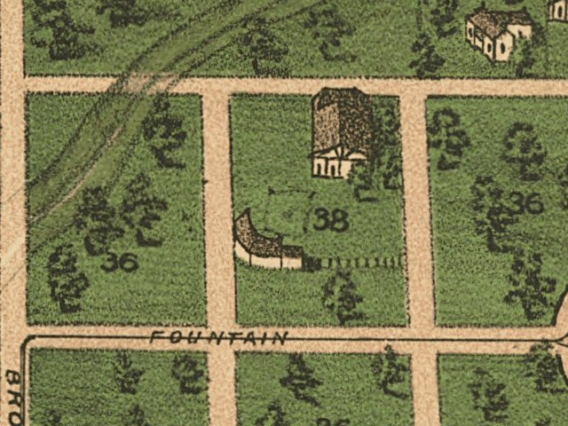

| Paducah, Kentucky - 1888 |
|---|
 |
| Bird's eye view of Paducah, Kentucky 1889. Drawn by J. Blanton Postlethwaite. Postlethwaite, J. Blanton. CREATED/PUBLISHED Cincinnati, Krebs Lith. Co., 1889. NOTES Perspective map not drawn to scale. Alternate title in lower margin: Paducah, Ky. Includes illus. and index to points of interest. REFERENCE LC Panoramic maps (2nd ed.), 238 |